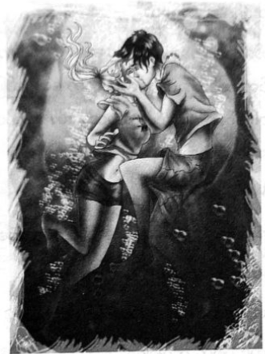

ကျန်ရစ်သူပါစီ
သူ့မြင်း ပါသွားသဖြင့် စိတ်ဆိုးရမည်လား၊ အံ့ဩရမည်လား ပါစီ ဝေခွဲမရ။ မြစ်ဘက်ဆီ ပြေးလာကြရင်း အန်နာဘတ် က မေးလိုက်သည်။
“သူ ဘာတွေ လျှောက်တွေးနေတာလဲ …”
ရေချယ်လ့် ဦးတည်ချက်ကို ပါစီ သဘောပေါက်သဖြင့် ပို၍ စိတ်ပူလာ၏။ လူအားလုံး လမ်းပေါ်ထွက်ကာ အပျက်အစီးများကို ကြည့်နေသဖြင့် ယာဉ်ကြောပိတ်ဆို့မှုမှာ ဆိုးဆိုးဝါးဝါးပင်။ ပလက်ဖောင်းတစ်ခု ကူးသွားတိုင်း ရဲကား ဥဩသံ များကို ကြားနေရသည်။ အငှားကားငှားဖို့ လုံးဝမဖြစ်နိုင်သလို မြင်းပျံများလည်း မရှိကြတော့။ ပါတီပိုနီများလည်း မြို့ထဲတွင် မတွေ့ရတော့ဘဲ ပျောက်နေကြသည်။ ထို့ကြောင့် လူများကြားမှသာ တွန်းတွန်းထိုးထိုးနှင့် ပြေးကြရသည်။
“သင်တန်းရဲ့ ခံစစ်အတားအဆီးတွေကို ဘယ်လို ဖြတ်ဝင်မှာလဲ … ပီလီယပ်စ် က သူ့ကို စားပစ်လိုက်လိမ့်မယ်”
အန်နာဘတ် ပြောသောစကားကို ပါစီ တစ်ခါမှ မစဉ်းစားမိ။ ရေချယ်လ်မှာ မြူကို ဖောက်မြင်နိုင်ရာ သင်တန်းကို အလွယ်တကူ တွေ့မည် ဖြစ်သည်။ မှော်နံရံ အတားအဆီးကြောင့် ဝင်မရပါစေနှင့်ဟု ဆုတောင်းမိ၏။ ပီလီယပ်စ်ပါ တိုက်ခိုက်နိုင်သည်အား ပါစီ မေ့နေခဲ့သည်။
နီကို့ကို ပါစီ လှမ်းမေးလိုက်သည်။
“မြန်မြန် သွားမှဖြစ်မယ် … အရိုးစုမြင်းလေး ဘာလေး မခေါ်နိုင်ဘူးလား …”
အမောတကော ပြေးရင်းမှ နီကို ပြန်ပြော၏။
“အရမ်းပင်ပန်းနေတယ် … ခွေးရိုးတောင် မမျှော်လင့်နဲ့”
နောက်ဆုံးတွင် ပါစီတို့ ကမ်းခြေသို့ ရောက်လာခဲ့ကြပြီး ခပ်ကျယ်ကျယ် လေချွန်သံ ပြုလိုက်သည်။ ပြောရလျှင် အိစ်မြစ်မှာ ပါစီ ခရုခွံတစ်ဝက် ပေးခဲ့သည့်တိုင် ညစ်ညမ်းမှုများ ရှိနေဆဲဖြစ်ပြီး ပင်လယ်သတ္တဝါများအတွက် အန္တရာယ် ရှိသည်။ သို့သော် ပါစီ ခေါ်လျှင် သူတို့ ရောက်လာကြ၏။
ရေပေါ်သို့ ဟစ်ပိုကမ်ပီ သုံးကောင် တက်လာကြပြီး မြစ်ထဲမှ နုန်းများကို ခါချရင်း စိတ်ပျက်ဟန်ဖြင့် ဟီသံ ပြုကြသည်။ ရောင်စုံ ငါးမြီးများနှင့် လှပသော သတ္တဝါများ ဖြစ်ကြပြီး ဦးခေါင်းနှင့် ရှေ့ခြေများမှာ အဖြူရောင်မြင်းကဲ့သို့ ဖြစ်ကြသည်။ ရှေ့ဆုံးရှိ ဟစ်ပိုကမ်ပီမှာ ပိုကြီးပြီး ဆိုက်ကလော့အတွက် ပိုသင့်လျော်ပုံ ရ၏။
“ဟေး … ရိန်းဘိုး … အခြေအနေ ကောင်းရဲ့လား”
ရိန်းဘိုးက ညည်းညည်းညူညူဖြင့် ဟီသံပြုသည်။
“ဒီမှာ ညစ်ပတ်လွန်းတာ ငါ သိပါတယ် … ဆောရီး … အရေးပေါ်ဖြစ်နေလို့ … ငါတို့ သင်တန်းသွားချင်တယ် ….”
ရိန်းဘိုး နှာမှုတ်သံပြု၏။
“တိုက်ဆန်လား … ဘာမှ မဖြစ်ဘူး … ဒီကိုတော့ ပါမလာဘူး … သူက ဆိုက်ကလော့ စစ်တပ်ရဲ့ ဗိုလ်ချုပ်ကြီး ဖြစ်သွားပြီ …”
ရိန်းဘိုးဟီသံ ပြုပြန်သည်။
“မင်းကို ပန်းသီးတွေ ယူလာပေးဦးမှာပါ … ကဲ … သွားရအောင် ..”
မကြာမီ ပါစီ၊ အန်နာဘတ်နှင့် နီကိုတို့ အိစ်မြစ်ကို မော်တော်ဘုတ်ထက် မြန်သောနှုန်းဖြင့် ဖြတ်ကျော်လာခဲ့ ကြသည်။ အလွန်ကြာသည်ဟု ထင်ရပြီးမှ သင်တန်းရှိရာ ကမ်းခြေကို မြင်ကြရသည်။ သင်တန်းသို့ရောက်လျှင် ကမ်းခြေ ၌ စောင့်နေသော အားဂတ်စ်ကို တွေ့ကြရသည်။
“ဒီကို ရောက်လာပြီလား …”
အားဂတ်စ် ခေါင်းညိတ်ပြ၏။
အန်နာဘတ်က …
“အားလုံး အဆင်ပြေရဲ့လား …”
အားဂတ်စ် ခေါင်းခါပြသည်။ သူ့နောက်မှ ပါစီတို့ လိုက်ခဲ့လျှင် သင်တန်း၌ လုံးဝ အေးအေးချမ်းချမ်းပင် ရှိနေကြောင်း တွေ့ရသဖြင့် အိပ်မက်ကဲ့သို့ပင် ခံစားရသည်။ နေရောင်အောက်တွင် အဆောင်အားလုံး တောက်ပနေကြပြီး မြက်ခင်းများတွင် နှင်းရည်စက်များ ရှိနေကြသည်။ သို့သော် သင်တန်းတစ်ခုလုံး လူသူဟူ၍ မရှိသလောက်ပင်။
အိမ်ကြီး၌ ပြဿနာရှိနေကြောင်း မြင်ရုံနှင့် သိသာပြီး ပြတင်းပေါက်များမှ အစိမ်းရောင်းအလင်းများ ဖြာထွက် နေကြသည်။ မေကတ်စ်တဲလ်လန်ကို အိပ်မက်ထဲတွင် မြင်ခဲ့ရစဉ်က ပုံစံမျိုးပင်ဖြစ်ပြီး ခြံဝင်းတစ်ခုလုံး မြူများဖြင့် ပြည့်နှက်နေ၏။ ဘော်လီဘောကွင်းထဲတွင် လူနာတင်ခုတင်ကြီးပေါ်၌ ခိုင်ရွန်လှဲနေပြီး သူ့ပတ်ဝန်းကျင်၌ ဆေတာများစွာ ရှိနေသည်။ မြက်ခင်းထဲတွင် စိတ်လှုပ်ရှားဟန်ဖြင့် ရှိနေသော ဘလက်ဂျက်ကိုလည်း တွေ့ရ၏။
ပါစီ့ကိုမြင်လျှင် ဘလက်ဂျက် ချက်ချင်း တောင်းပန်လိုက်သည်။
“ကျွန်တော့်ကို အပြစ်မတင်နဲ့နော် ဘော့စ် … ဟိုထူးထူးဆန်းဆန်း ကောင်မလေး အတင်းခိုင်းတာ”
အိမ်ကြီးရှေ့ လှေကားနားတွင် ရေချယ် ရပ်နေပြီး လက်နှစ်ဖက်ကို မြှောက်ထားကာ အိမ်ထဲမှ တစ်ယောက် ယောက်က ဘောလုံးနှင့် ပစ်လျှင် ဖမ်းရန် အဆင်သင့် ရှိနေပုံမျိုး ဖြစ်၏။
“သူ ဘာလုပ်နေတာလဲ … မှော်အကာအကွယ်ကို ဘယ်လို ဖြတ်ဝင်လာတာလဲ …”
အန်နာဘတ် မေးလိုက်လျှင် ဆေတာ တစ်ယောက်က ဘလက်ဂျက်အား အပြစ်တင်သလို ကြည့်ရင်း ပြန်ဖြေသည်။
“ပျံပြီး ဝင်လာတာလေ … နဂါးကို ဖြတ်ပြီး ဝင်လာတာ … မှော်နံရံလည်း အလကားပဲ …”
“ရေချယ်လ် …”
ပါစီ အနားကပ်သွားရန် ကြံသော်လည်း ဆေတာများက လှမ်းတားကြသည်။
“မသွားနဲ့ ပါစီ …”
ခိုင်ရွန်က လှမ်းတား၏။ လှုပ်ရှားရုံနှင့် နာကျင်နေပုံရပြီး ဘယ်ဘက်လက်၊ ခြေထောက်နှစ်ချောင်းကို ကျောက် ပတ်တီး စည်းထားရသည်။ ခေါင်း၌လည်း ပတ်တီး အဖွေးသားနှင့် ဖြစ်၏။
“ဝင်ရှုပ်လို့မရဘူး …”
“သေချာရှင်းပြထားတယ် မဟုတ်လား …”
“ရှင်းပြတာပေါ့ … ဒီကိုလာဖို့ ဖိတ်ခဲ့တာ ငါ ကိုယ်တိုင်ပဲ”
ခိုင်ရွန့်ကို မယုံနိုင်သလို ပါစီ ငေးကြည့်နေမိသည်။
“ဘယ်သူ့ကိုမှ ထပ်ပြီး ကြိုးစားခွင့် မပေးတော့ဘူးဆို …”
“ငါ ပြောခဲ့တဲ့ စကားကို ငါ မှတ်မိပါတယ် ပါစီ … ဒါပေမဲ့ ဒါက ငါ မှားနေတာ … ဟေးဒီးစ်ရဲ့ ကျိန်စာကိစ္စကို ရေချယ်လ် မြင်ပြီးသား… အခုအချိန်ဆို ကျိန်စာပြယ်ပြီလို့ ရေချယ်လ် ထင်နေတယ် … သူ့ကို အခွင့်အရေးပေးဖို့ ငါ သဘော တူလိုက်တယ် ...”
“ကျိန်စာ မပြယ်သေးရင် … ဟေးဒီးစ် မကျေနပ်သေးရင် ဘယ်လိုလုပ်ကြမလဲ … ရေချယ်လ် ရူးသွားလိမ့်မယ်…”
ရေချယ်လ့် ပတ်ဝန်းကျင်တွင် မြူများ ဝဲလှည့်နေကြပြီး သူမ တစ်ကိုယ်လုံး တုန်ယင်နေသည်။
“ဟေး … ရပ်လိုက်တော့ ..”
တားနေသည့် ဆေတာများကို ဂရုမစိုက်ဘဲ ရေချယ်လို့အနီးသို့ ပါစီ ပြေးလာခဲ့သည်။ ဆယ်ပေအနီးသို့ ရောက်လျှင် မမြင်ရသော နံရံတစ်ခုကို ဝင်တိုက်မိပြီး နောက်ပြန်လွင့်ကျသွားသည်။ ရေချယ်လ် မျက်စိ ဖွင့်ကြည့်ကာ ပါစီ့ ကို မြင်ပုံရသော်လည်း အိပ်မက်မက်နေသူနှယ် ရှိ၏။
“ဘာမှမဖြစ်ဘူး … ဒီကိစ္စကြောင့် ငါ သင်တန်းကို လာခဲ့တာ …”
ရေချယ်လ့် စကားသံမှာ အဝေးကလာသည်နှင့် တူနေ၏။
“နင် သေလိမ့်မယ်”
ခေါင်းခါယမ်းရင်း ရေချယ်လ် ပြန်ပြောသည်။
“ဒါငါ့နေရာပဲ ပါစီ … နောက်ဆုံး ငါ နားလည်သွားပြီ”
မေကတ်စ်တဲလ်လန် ပြောခဲ့ဖူးသော စကားနှင့် အလွန်ဆင်တူနေသည်ဟု ပါစီ ထင်၏။ သူမကို တားလို သော်လည်း ပါစီ မတ်တတ်ပင် မရပ်နိုင်။ အိမ်ကြီး တစ်ခုလုံး တုန်ခါလာပြီး တံခါးများ ပွင့်ထွက်ကုန်ကာ အစိမ်းရောင် အလင်းများ အပြင်သို့ ထွက်လာသည်။
မြူများမှာ မြွေများစွာ ဖြစ်လာခဲ့ပြီး အိမ်ပတ်ဝန်းကျင်တွင် ခွေနေကြသည်။ တံခါးဝတွင် အော်ရကယ် ရောက်လာ၏။ သက်တံ့ရောင်စုံ အဝတ်များနှင့် ခြောက်ကပ်နေပြီး ဖြစ်သော မံမီ အလောင်းကောင်မှာ ယခင်ကထက်ပင် ပို၍ ပျက်စီးနေသည်။ ဆံပင်များ ကျွတ်နေပြီး အရေပြားများမှာ ပတ်ကြားအက် မြေကြီးသဖွယ် အက်ကွဲနေကြသည်။ မျက်လုံးများမှာ ဘာကိုမှ မြင်ဟန်မရှိသော်လည်း ရေချယ်လ်ဆီသို့ ဦးတည်လာနေခြင်း ဖြစ်သည်။ ရေချယ်လ် လက်ကမ်း ကြိုဆိုလိုက်ပြီး လုံးဝ ကြောက်လန့်ပုံမရ။
ရေချယ်လ်က …
“နင် စောင့်နေရတာ သိပ်ကြာခဲ့ပြီ … အခု ငါ ရောက်လာပြီ”
နေရောင်များ ပိုမိုတောက်ပလာပြီး လေထဲတွင် ဆံပင်အဝါ၊ ဂရိရှေးခေတ် ဝတ်ရုံအဖြူနှင့် နေကာမျက်မှန် တပ်ထားသော လူတစ်ယောက် ပေါ်လာ၏။
“အပိုလို …”
အပိုလိုက ပါစီကို မျက်စိမှိတ်ပြရင်း နှုတ်ခမ်းပေါ် လက်တစ်ချောင်းတင်ကာ တိတ်တိတ်နေဟု အချက်ပြ လိုက်သည်။
“ရေချယ်လ် အဲလိဇဘက်ဒါရီ … မင်းဆီမှာ ဟောကိန်း ဟောနိုင်တဲ့ အစွမ်း ပါလာတယ် … ဒါပေမဲ့ ဒါက ကျိန်စာ လို့လည်း ပြောရင်ရတယ် … ဒါကို လိုချင်တာ သေချာရဲ့လား …”
အပိုလို မေးလိုက်လျှင် ခေါင်းညိတ်လိုက်သည်။
“ဒါ ကျွန်မရဲ့ ကံကြမ္မာပဲ …”
“အန္တရာယ် ရှိတယ်ဆိုတာ မင်း သိတယ် မဟုတ်လား …”
“ဟုတ်ကဲ့ …”
“ဒါဆို ခွင့်ပြုလိုက်တယ် ….”
“ဒီတာဝန်ကို ကျွန်မ လက်ခံပါတယ် … ဟောကိန်းတွေရဲ့ နတ်ဘုရားဖြစ်တဲ့ အပိုလိုကို တိုင်တည်ပြီး ပြောပါ့မယ် … အနာဂတ်ကို မျှော်ကြည့်ရင်း အတိတ်ကို လက်ခံပါမယ် … ဒဲလ်ဖိုင်ရဲ့ ဝိညာဉ်ကို လက်ခံပါတယ် …”
ထိုစကားလုံးများကို ဘယ်နေရာက ရေချယ်လ် ရလာသလဲ ပါစီ မသိသော်လည်း မြူများမှာ တဖြည်းဖြည်း ပို၍ ထူထပ်လာခဲ့သည်။ အစိမ်းရောင် မြွေကြီးနှင့် တူလှသော အခိုးအငွေ့များမှာ မံမီ၏ ပါးစပ်မှ ထွက်လာကာ ရေချယ်လ့် ခြေရင်းတွင် သဘောတကျ ရစ်ခွေနေ၏။ အော်ရကယ်၏ မံမီအကောင်မှာ တစ်စစီ ပြိုကွဲကျသွား ပြီးနောက် အဝတ်စုတ်ပုံ တစ်ပုံမှ လွဲ၍ ဘာမှ မကျန်ရစ်ချေ။ ထို့ နောက် ရေချယ်လ့်ကို မြူများ ဖုံးအုပ်သွားခဲ့ပြီး ပါစီ ဘာမှ မမြင်ရတော့။
ရေချယ်လ် လဲပြိုကျသွားပြီး မြေကြီးပေါ်တွင် ပုဇွန်တုပ်ကွေးပမာ ကွေးအိပ်နေသည်။ အန်နာဘတ်၊ နီကိုနှင့် ပါစီ တို့ ရှေ့သို့ ပြေးထွက်လာကြသဖြင့် အပိုလိုက လှမ်းတားလိုက်သည်။
“ရပ်ကြ … ဒါ အရေးအကြီးဆုံး အချိန်ပဲ ..”
“ဘာတွေဖြစ်ကုန်ပြီလဲ …"
ရေချယ်လ့်ကို ကြည့်ရင်း အပိုလို ကိုယ်တိုင်ပင် စိုးရိမ်နေဟန်ရှိသည်။
“ဝိညာဉ် ဝင်လို့ ရချင်ရမယ် … မရချင်လည်း မရဘူး …”
“မရရင် …”
“စကားလုံး ငါးလုံးနဲ့ ပြောမယ် … အ … ရမ်း … ဆိုး … လိမ့် … မယ် …”
အပိုလိုက လက်တစ်ချောင်းချင်းစီ ချိုးကာ ရေတွက်ရင်း ဆို၏။ အပိုလို သတိပေးနေသည့်တိုင် ပါစီ အပြေး သွားရင်း ရေချယ်လ့်နံဘေးတွင် ဒူးထောက်ထိုင်လိုက်သည်။ မြူများ မြေကြီးထဲ ပြန်ဝင်သွားကြပြီး အစိမ်းရောင် အလင်းများ မှေးမှိန်သွားပြီ ဖြစ်သည်။ သို့သော် ရေချယ်လ်မှာ ဖျော့တော့တော့သာ ရှိနေပြီး အသက်ပင် ကောင်းကောင်း မရှူချေ။ ထို့နောက် ရေချယ်လ် မျက်လုံး ပွင့်လာပြီး ပါစီ့ကို ခက်ခက်ခဲခဲ အာရုံစိုက်ကာ ကြည့်လိုက်သည်။
“ပါစီ …”
“နင် နေကောင်းရဲ့လား …”
နားထင်ကို လက်နှင့်ဖိရင်း ရေချယ်လ် ထထိုင်လိုက်သည်။
နီကိုက …
“ရေချယ်လ် … နင့် အသက် လုံးဝပျောက်ခါနီး ဖြစ်သွားတာ ငါ သေသေချာချာ မြင်လိုက်ရတယ် …”
“ငါ ဘာမှမဖြစ်ဘူး … ငါ့ကို တွဲထူကြပါ … မြင်သမျှတွေက များတော့ နည်းနည်း မူးနေတယ် …”
“နင် တကယ် ဘာမှ မဖြစ်ပါဘူးနော် …”
အပိုလိုက မြေပေါ် ဆင်းသက်လာရင်း ကြေညာလိုက်သည်။
“အားလုံးပဲ မိတ်ဆက်ပေးချင်တယ် … ဒါက ဒဲလ်ဖိုင် နတ်ဆရာမ အသစ်ပဲ”
“နောက်တာလား” ဟု အန်နာဘတ်က ဝင်မေး၏။
ရေချယ်လ်က ဖျော့တော့စွာ ပြုံးရင်း ...
“ငါလည်း အံ့ဩမိတယ် … ဒါက ငါ့ကံကြမ္မာပဲ … နယူးယော့ခ်မှာ ကတည်းက မြင်ခဲ့တာ … မြူကို ဘာကြောင့် ဖောက်မြင်နိုင်တဲ့ အစွမ်း ငါ့မှာ ပါလာသလဲ ဆိုတော့ ငါက နတ်ဆရာမ ဖြစ်လာမှာကိုး ……”
“နင်က အနာဂတ်ကို ဟောနိုင်တယ်လို့ ပြောတာလား”
“အချိန်တိုင်း မဟောနိုင်ဘူး ပါစီ .. စိတ်ထဲမှာ ငါ မြင်နေတာတွေတော့ အများကြီးပဲ … တစ်ယောက်ယောက်က ငါ့ကို မေးခွန်းမေးမှ … ဘုရားရေ …”
“စပြီ” ဟု အပိုလိုက ပြောသည်။
တစ်ယောက်ယောက်က လက်သီးနှင့် ထိုးလိုက်သလို ရေချယ်လ် ခါးကိုင်း ကျသွားပြီး ပြန်မတ်မတ် ရပ်လာ ချိန်တွင် သူမ၏ မျက်လုံးများမှာ အစိမ်းရောင် တောက်ပနေကြသည်။
“စိန်ခေါ်မှုကို လက်ခံမယ့် နတ်သွေးနှောသူ ခုနစ်ယောက် …”
မုန်တိုင်းနဲ့လား … မီးနဲ့လား … ကမ္ဘာကြီးက ပျက်စီးတော့မှာ …
နောက်ဆုံး ထွက်သက်နဲ့ ဖြည့်ဆည်းရမယ့်ကတိ… သေမင်းတံခါးဆီ ရန်သူတွေ လက်တွဲ ချီတက်ကြမယ်…”
စကားဆုံးလျှင် ရေချယ်လ် လဲပြိုကျသွားပြီး ပါစီနှင့် နီကို လှမ်းဆွဲ ဖမ်းထားရသည်။ သူမ အသားအရေမှာ မီးလို ပူနေ၏။
“ငါ ဘာမှမဖြစ်ဘူး …”
သူမ အသံမှာ ပုံမှန်ပြန်ဖြစ်လာသည်။
“ဒါက … ဘာဖြစ်တာလဲ …”
ဘာမှ နားမလည်နိုင်ဟန်ဖြင့် ရေချယ်လ် ပြန်မေးသည်။
“ဘာဖြစ်လို့လဲ …”
အပိုလိုက …
“နောက်ထပ် မဟာဟောကိန်းကြီး တစ်ခုကို ငါတို့ ကြားလိုက်ရတာလို့ ငါ ယုံတယ် …”
“အဲဒါက ဘာအဓိပ္ပာယ်လဲ …”
ရေချယ်လ် မျက်မှောင်ကုတ်ကာ စဉ်းစားနေသည်။
“ငါ ဘာတွေ ပြောခဲ့မိသလဲ မမှတ်မိဘူး …”
“ဒဲလ်ဖိုင်ဝိညာဉ်က မင်းကိုယ်စား ဟောကိန်းထုတ်တာ ရှားပါတယ် … ကျန်တဲ့ အချိန်အားလုံး ရေချယ်လ်က ရေချယ်လ် ပါပဲ … ဘာမှ လျှောက်မမေးကြနဲ့ … အနာဂတ်အတွက် မဟာဟောကိန်းကြီးတစ်ခု ငါတို့ ထပ်ကြားခဲ့ရပြီ …” ဟု အပိုလို က ဆို၏။
“ဘယ်လို … ဒါက …”
“ပါစီ … သိပ်စိတ်မပူပါနဲ့ … မင်းအကြောင်းပါတဲ့ ပြီးခဲ့တဲ့ မဟာဟောကိန်းကြီးဆိုရင် လက်တွေ့ဖြစ်လာဖို့ နှစ်ခုနစ်ဆယ်ကျော် အချိန် ကြာခဲ့တယ် … ဒီတစ်ခုက မင်း တစ်သက်တာ ကာလအတွင်းမှာ ဖြစ်ချင်မှ ဖြစ်လာမှာပါ …”
ရေချယ်လ် ပြောသွားသမျှ မုန်တိုင်း၊ မီးနှင့် သေမင်းတံခါးတို့ကို ပါစီ စဉ်းစားနေမိသည်။
“အဲလို ဖြစ်ချင် ဖြစ်ပါလိမ့်မယ် … ဒါပေမဲ့ ကြားရတာ သိပ်မကောင်းလှဘူး” အပိုလိုမှာ ခပ်ပျော်ပျော်ပင်။
“ဟုတ်တယ် … သတင်းကောင်းတော့ မဟုတ်ဘူး … ရေချယ်လ်က တကယ် နာမည်ကျော်တဲ့ နတ်ဆရာမ ဖြစ်လာ လိမ့်မယ်”
ရေချယ်လ် အနားယူရန် လိုသည်ဟု အပိုလိုက ဆိုသဖြင့် စကားပြတ်သွားကြသည်။ ပြောရလျှင် ရေချယ့်ပုံစံမှာ တကယ်လည်း အနားယူရန် လိုနေ၏။
“ငါ စိတ်မကောင်းပါဘူး ပါစီ … အိုလံပတ်စ်မှာ နင့်ကိုငါ ဘာမှ ရှင်းမပြ ဖြစ်ခဲ့ဘူး … နင် နားလည်မယ်လို့ ငါ မထင်မိဘူး”
“ခုထိလည်း ငါ ဘာမှ နားမလည်ဘူး … ဘာမှမဖြစ်တာဘဲ ဝမ်းသာလှပြီ”
ရေချယ်လ်က ပြုံးရင်း …
“အနာဂတ်ဟောကိန်း အရတော့ သိပ်မပျော်နိုင်ဘူး … အနာဂတ်ကို မြင်နေရတာ မလွယ်ဘူး … ဒါပေမဲ့ ဒါက ငါ့ကံကြမ္မာပဲ … ငါ့မိသားစု …”
ရေချယ်လ် စကားမဆက်ချေ။
“ကလာရီယွန် အကယ်ဒမီကို သွားမှာလား”
“ကတိပေးပြီးပြီ ဆိုတော့ ကျောင်းတက်ချိန်မှာ ပုံမှန် ကလေးတစ်ယောက်လို နေရတာပေါ့ဟာ … ဒါပေမဲ့ …”
“ဒါပေမဲ့ အခု မင်း အိပ်ဖို့ လိုနေပြီ … ခိုင်ရွန် … နတ်ဆရာမ အသစ်ကို ထပ်ခိုးပေါ်မှာ ထားလို့မသင့်ဘူး ထင်တယ်”
အပိုလိုက ဝင်သတိပေး၏။ အပိုလို၏ မှော်ပညာဖြင့် ဆေးကုပေးထားသောကြောင့် ခိုင်ရွန်မှာ အခြေအနေ များစွာ တိုးတက်လာပြီ ဖြစ်သည်။
“ဟုတ်တယ် … သေချာ မပြင်ဆင်ရသေးခင် ဧည့်သည်အတွက် ထားတဲ့ အိမ်ကြီးထဲက အခန်းကိုပဲ ခဏသုံးပေါ့ …”
ခိုင်ရွန်က တွေးတွေးဆဆ ဆိုသည်။
အပိုလိုက …
“တောင်ကုန်းပေါ်က ဂူတစ်ခုဆို မိုက်မယ် … မီးတုတ်တွေနဲ့ … ဝင်ပေါက်ဝမှာ ခရမ်းရောင်ခန်းဆီးနဲ့ဆို တကယ် ထူးခြားသွားမယ် … ဂူထဲမှာ အိမ်တွင်း ရုပ်ရှင်ရုံစနစ်ပါ ထည့်လိုက်ရင် ….”
ခိုင်ရွန် ကျယ်ကျယ်လောင်လောင်ပင် ချောင်းဟန့်လိုက်သည်။
“ဘာလဲ …”
ထိုအခိုက်တွင် ရေချယ်လ်က ပါစီ့ပါးကို နမ်းရင်း နှုတ်ဆက်လိုက်သည်။
“ငါ သွားတော့မယ် ပါစီ … နင် ဘာလုပ်ရမယ်ဆိုတာ ငါ ဟောကိန်း ထုတ်ပေးဖို့ မလိုဘူး မဟုတ်လား …”
ရေချယ်လ့် မျက်လုံးများမှာ ယခင်ကထက် ပို၍စူးစူးရှရှ ရှိနေကြသည်။
ပါစီ့ မျက်နှာ နီသွားရင်း …
“မလိုပါဘူး …”
“ကောင်းပြီ …”
ထို့နောက် အပိုလိုနောက်မှ ရေချယ်လ် လိုက်သွားပြီး အိမ်ကြီးထဲ ဝင်သွားတော့သည်။
ထိုနေ့ တစ်နေကုန်မှာလည်း ထူးထူးဆန်းဆန်းပင် ဖြစ်သည်။ နယူးယော့ခ်မှ သင်တန်းသားများ ကားဖြင့်တစ်မျိုး၊ မြင်းပျံဖြင့် တစ်သွယ်၊ မြင်းရထားဖြင့် တစ်နည်း အသီးသီး ပြန်ရောက်လာကြသည်။ ဒဏ်ရာရသူများကို ပြုစုကုသ ပေးကြပြီး ကျဆုံးသွားသူများကို အခမ်းအနားဖြင့် သင်္ဂြိုလ်ကြသည်။
ဆီလီနာကို ပတ်ထားသော အဝတ်စမှာ ပန်းရောင်တောက်တောက် ဖြစ်ပြီး လျှပ်စစ်လှံပုံများ ပါ၏။ အေးရီးစ် အဆောင်နှင့် အဖရိုနိုက် အဆောင် နှစ်ခုစလုံးက သူမအား သူရဲကောင်းအဖြစ် သတ်မှတ်ကြပြီး အတူတကွ မီးရှို့ခဲ့ ကြသည်။ မည်သူ့ဆီကမှ “သူလျှို” ဟူသောစကားကို မကြားရ။ ထိုလျှို့ဝှက်ချက်မှာ ဆီလီနာနှင့် အတူတူ ပြာဖြစ်သွား ခဲ့သည်။
အီသန် နာကာမူရာကိုပင် အဝတ်စဖြင့် သင်္ဂြိုလ်ခဲ့ကြပြီး ချိန်ခွင်အောက်တွင် ဓားနှစ်လက် ကြက်ခြေခတ် ထားသော ပုံပါသည့် အနက်ရောင်ပိုးစ ဖြစ်သည်။ အဝတ်စ မီးလောင်သွားချိန်တွင် အီသန့်ကြောင့် အပြောင်းအလဲများ ဖြစ်လာခဲကြောင်း သူ့ကို ပါစီ ပြောပြချင်မိသည်။ မျက်စိတစ်ဖက်မက ပေးဆပ်ခဲ့ရသော်လည်း ယခုအခါ သာမန်နတ်များ ပါ ထိုက်တန်သော လေးစားမှုကို ရလာကြပေလိမ့်မည်။
ညစာစားပွဲမှာ ကြီးကြီးမားမား မရှိလှ။ ထူးထူးခြားခြားဟူ၍ ဂျူနီပါ ပြေးဝင်လာကာ “ဂရိုဗာ” ဟု အသံကုန် အော်ရင်း သူ့ရည်းစားကို အားပါးတရ ပြေးဖက်လိုက်ခြင်းသာ ရှိ၏။ အားလုံး အော်ဟစ် အားပေးလိုက်ကြသည်။ ကမ်းခြေ တွင် လမ်းလျှောက်ရန် လက်တွဲ၍ ထွက်သွားကြလျှင် သူတို့အတွက် ပါစီ ပျော်ရွှင်မိ၏။ သို့သော် ဆီလီနာနှင့် ဘက်ကင် ဒေါ့ဖ် ကို မြင်ယောင်လာမိသဖြင့် ဝမ်းမနည်းဘဲ မနေနိုင်ပြန်။
မစ္စအိုလာရီမှာ ပျော်ပျော်ရွှင်ရွှင် ခုန်ပေါက်ရင်း စားပွဲတိုင်းမှ စားကြွင်းစားကျန်များကို လိုက်စားနေသည်။ ထိပ်ဆုံးစားပွဲတွင် ခိုင်ရွန်၊ မစ္စတာဒီနှင့်အတူ နီကို ထိုင်နေပြီး မဖြစ်သင့်သော ကိစ္စဟု မည်သူမျှ မထင်ကြ။ အားလုံးမှာ နီကို့ကျောကို ပုတ်ကာ နှုတ်ဆက်ရင်း သူတိုက်ပွဲဝင်ခဲ့ပုံကို ချီးကျူးကြ၏။ အေးရီးစ် အဆောင်သားများပင် သူ့ကို သဘော ကျကြ၏။ အရိုးစု စစ်တပ်ကြီးနှင့် စစ်ကူ ရောက်လာသော နီကို့ကို အားလုံးက ခင်မင်ချင်ကြသည်မှာ မထူးဆန်းပေ။
တဖြည်းဖြည်းနှင့် ညစာစားပွဲ၌ လူများ ရှင်းလင်းသွားပြီး အချို့မှာ မီးပုံတွင် သီချင်းဆိုရန် ထွက်သွားကြပြီး အချို့မှာ အိပ်ရာဝင်သွားကြသည်။ ပိုဆိုက်ဒွန် စားပွဲတွင် ပါစီ တစ်ယောက်တည်း ထိုင်ရင်း လရောင်ဖြာကျနေသော မြင်ကွင်းကို ငေးကြည့်နေမိသည်။ ကမ်းခြေတွင် လက်တွဲလျှောက်ရင်း စကား ပြောနေကြသော ဂျူနီပါနှင့် ဂရိုဗာကို မြင်နိုင်သည်။
“ဟေး … ပျော်စရာမွေးနေ့ ဖြစ်ပါစေ ပါစီ …”
ဘေးနားတွင် လာထိုင်ရင်း အန်နာဘတ် ပြောလိုက်သည်။ သူမ လက်ထဲတွင် ပုံပန်းမကျလှသော ကိတ်မုန့် တစ်လုံး ပါလာပြီး ခရင်မ်အပြာရောင်နှင့် ဖြစ်၏။
“ဘယ်လို …”
“ဩဂုတ် ၁၈ ဖြစ်သွားပြီ … နင့်မွေးနေ့ မဟုတ်ဘူးလား …”
ပါစီ အလွန်အံ့အားသင့်နေ၏။ သူ လုံးဝ မေ့နေခဲ့ခြင်း ဖြစ်ပြီး ဤနေ့ မနက်ကပင် ပါစီအသက် ဆယ့်ခြောက်နှစ် ပြည့်ခဲ့ပေပြီ။ လုပ်ခ်လက်ထဲ ဓားမြှောင်ထည့်ပေးရန် ဆုံးဖြတ်ခဲ့ပြီးပေပြီ။ ဟောကိန်းမှာ အချိန်အတိအကျ မှန်ခဲ့ပြီး သူ့မွေးနေ့ ဟုပင် ပါစီ သတိမရနိုင်ခဲ့။
“ဆုတောင်းလေ …”
“နေပါဦး … နင် ကိုယ်တိုင် ဖုတ်လာတဲ့ ကိတ်မုန့်လား”
“တိုင်ဆန် ဝင်ကူသေးတယ်”
“အဲဒါကြောင့် ချောကလက်အုတ်ခဲရုပ် ပေါက်နေတာပဲ … အုတ်ခဲပေါ်က အင်္ဂတေ အပြာရောင်နဲ့ ….”
အန်နာဘတ် ရယ်၏။ ခေတ္တမျှ စဉ်းစားပြီး ပါစီ ဖယောင်းတိုင်ကို မှုတ်လိုက်သည်။ တစ်ဝက်ခွဲပြီး လက်နှင့် ကိုင်စား ကြ၏။ ပါစီ့ဘေးတွင် အန်နာဘတ် ရှိနေပြီး ပင်လယ်ကြီးကို ငေးကြည့်ဖြစ်ကြသည်။ တောအုပ်ထဲမှ မိစ္ဆာများ၏ အသံနှင့် ပုရစ်သံများမှအပ ပတ်ဝန်းကျင်တစ်ခုလုံး တိတ်ဆိတ်နေသည်။
“ကမ္ဘာကြီးကို နင် ကယ်နိုင်ခဲ့ပြီ ပါစီ …”
“ငါတို့ ကယ်နိုင်ခဲ့တာပါ ..”
“ရေချယ်လ်က နတ်ဆရာမ အသစ် ဖြစ်သွားပြီ … ရည်းစားထားခွင့် မရှိတော့ဘူး …”
“အင်း ...”
မျက်ခုံးပင့်ကြည့်ရင်း အန်နာဘတ်က မေးသည်။
“နင် ငါ့ကို ပြောစရာ ရှိတယ် မဟုတ်လား … ရေညှိဦးနှောက်”
“ပြောလိုက်ရင် လက်သီးနဲ့ အထိုးခံရနိုင်တယ်”
“မပြောရင်လည်း ဆွဲထိုးခံရနိုင်တာပဲ”
လက်မှ ကိတ်မုန့်များကို ခါချရင်း ပါစီ ပြောလိုက်သည်။
“စတစ်မြစ်မှာ ငါ ရေဆင်းငုပ်တော့ ဒီကမ္ဘာမှာ အရေးအကြီးဆုံး အရာနဲ့ ချိတ်ဆက်ထားဖို့ နီကိုက ပြောတယ်… ငါ့ကို လူသားအဖြစ် နေချင်စေတဲ့ ကိစ္စ တစ်ခုခု ……”
အဝေးသို့သာ အန်နာဘတ် ငေးကြည့်နေသည်။
“အဲဒီတော့ …”
“အိုလံပတ်စ်မှာ ငါ့ကို နတ်ဖြစ်အောင် လုပ်ပေးကြမယ် ဆိုတော့လည်း ငါ စဉ်းစားတယ် …”
“နင်က နတ်ဖြစ်ချင်တယ်ပေါ့ ….”
“နည်းနည်းပေါ့ … ဒါပေမဲ့ … ဒီလိုကြီးပဲ အပြောင်းအလဲ မရှိဘဲ ထာဝရ ငါ မနေချင်ဘူး … ပိုကောင်းလာနိုင်တဲ့ ကိစ္စတွေ ရှိသေးတယ် … ငါစဉ်းစားတာက …”
လည်ပင်းများ ခြောက်လွန်းလာသလို ခံစားရပြီး စကား ဆက်ပြော၍မရ။
“ဘယ်သူ့ကို တွေးမိနေတာလဲ …”
အန်နာဘတ်အသံ ပို၍ နူးညံ့လာ၏။ သူမကို ကြည့်လိုက်လျှင် မပြုံးမိစေရန် ကြိုးစားထိန်းနေရပုံ ပေါ်သည်။
“နင် ငါ့ကို ဟားနေတာပဲ …”
“မဟုတ်ဘူး ……”
“မယုံဘူး … ငါ ပြောရ ပိုခက်အောင် နင် လုပ်နေတာ”
ထို့နောက် အန်နာဘတ် ရယ်ရင်း ပါစီ့ပခုံးကို ဖက်ထားလိုက်သည်။
“ရေညှိဦးနှောက် … ငါကတော့ နင် အခက်တွေ့အောင် အမြဲ လုပ်မှာပဲ … အကျင့်ရအောင် ကြိုးစားထား ..”
သူ့ကို အန်နာဘတ် နမ်းလိုက်လျှင် ဦးနှောက်တစ်ခုလုံး အရည်ပျော်သွားပြီ ဟု ပါစီ ထင်မိသည်။ တစ်ညလုံး ဤနေရာ၌ နမ်းရင်း နေနိုင်သော်လည်း နောက်ဘက် မှ အသံတစ်သံကို ကြားလိုက်ရသည်။
“နောက်ကျလိုက်ကြတာ …"
ရုတ်တရက် ဆိုသလို မီးတုတ်များနှင့် သင်တန်းသားများ ရောက်လာပြီး ကလဲရစ်က ဦးဆောင်လာခြင်းဖြစ်သည်။ ချောင်းကြည့်နေသူများအားလုံး ပြေးလာပြီး ပါစီတို့ နှစ်ယောက်ကို ပခုံးပေါ်ထမ်းတင်လိုက်ကြ၏။
“ဟား … ဘာလာရှုပ်ကြတာလဲ … လွတ်လွတ်လပ်လပ် မရှိလိုက်တာ …”
ပါစီ ညည်းညူလျှင် ကလဲရစ်က ဝမ်းသာအားရဖြင့် …
“နှစ်ယောက်လုံး ပူးကပ်နေတာ ပူနေလောက်ပြီ …”
“ကနူးလှေကန်ဆီ သွားကြ …” ဟု ကော်နာစတိုလ်က ထောက်ခံ၏။
ဝမ်းသာအားရ အော်ဟစ်ကြပြီး သင်တန်းသားများမှာ ပါစီတို့ကို ထမ်းခေါ်သွားကြသည်။ သို့သော် လက်တွဲ မဖြုတ်ရစေရန် ခပ်နီးနီး ထမ်းပေးကြ၏။ အန်နာဘတ် ရယ်နေသလို ပါစီလည်း မရယ်ဘဲ မနေနိုင်။ ပါစီ့ မျက်နှာတစ်ခုလုံး ရဲရဲတောက် နေလေသည်။ ထို့နောက် သင်တန်းသားများက လက်ချင်းတွဲထားသူ နှစ်ယောက်အား ရေကန်ထဲ ပစ်ချလိုက် ကြသည်။
ရေထဲရောက်လျှင် ပါစီ့အတွက် အရာရာ လွယ်ကူသွားခဲ့သည်။ ရေကန်အောက်တွင် လေပူဖောင်းကြီးတစ်ခုကို ဖန်တီးလိုက်၏။ ရေကန်ပေါ်ပြန်တက်လာ ပါစီကို သူငယ်ချင်းများ စောင့်နေကြသော်လည်း ပိုဆိုက်ဒွန်၏ သားအတွက် လောလောလတ်လတ် ရေပေါ်ပြန်တက်စရာ မလိုချေ။
ပြောရလျှင် ပါစီ့ဘဝတွင် အကောင်းဆုံးသော ရေအောက်အနမ်းပင်။
♦️🌟♦️